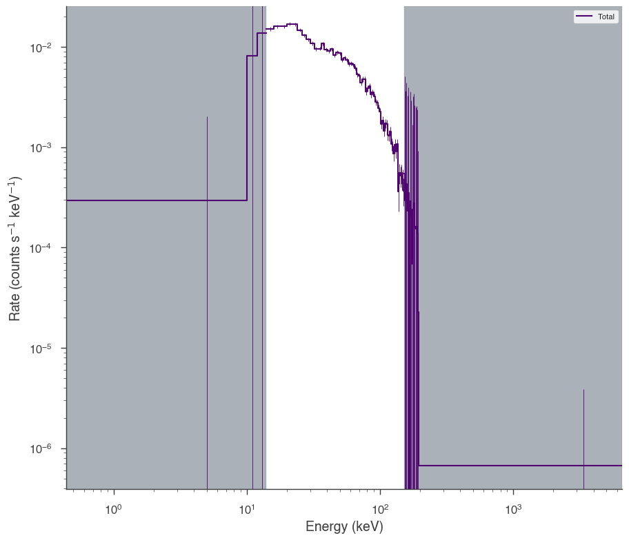
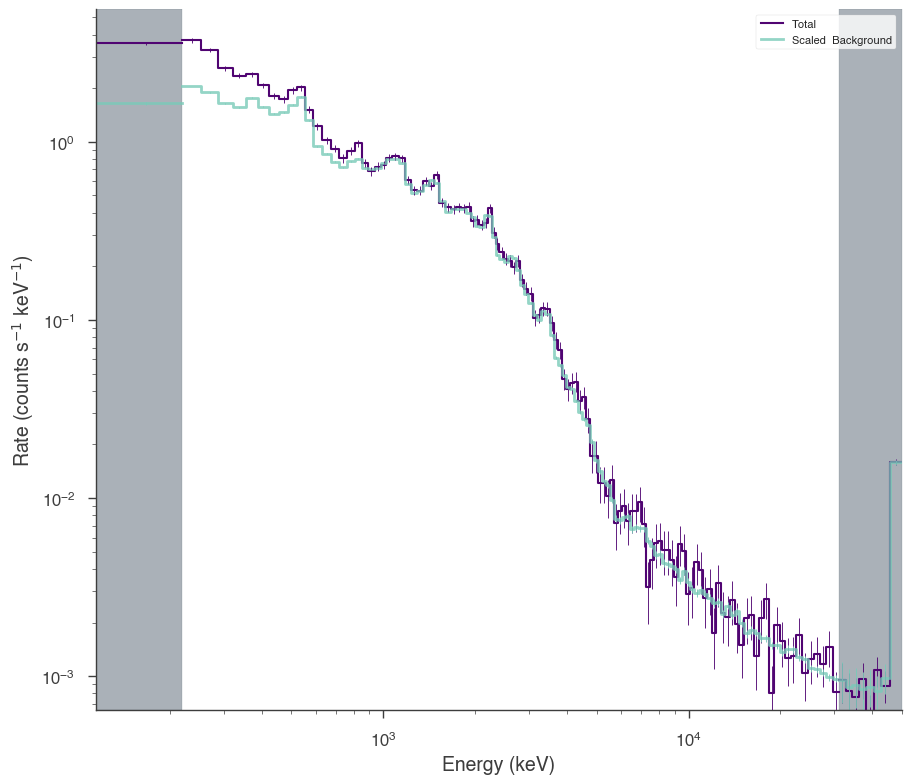
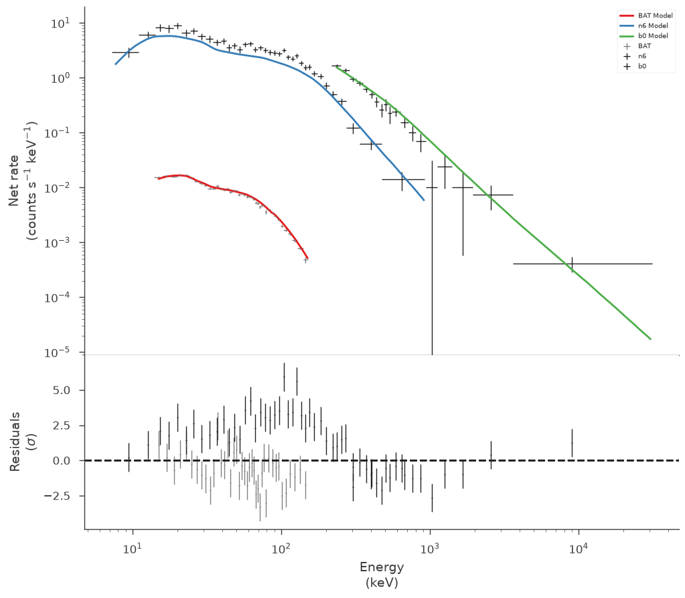
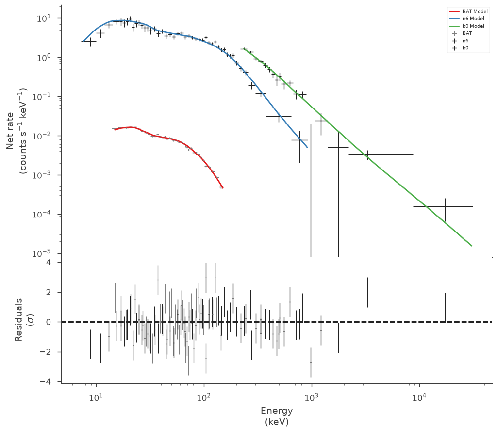
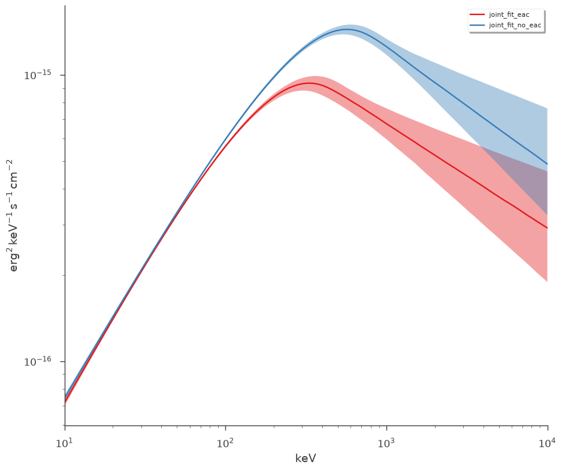

Example joint fit between GBM and Swift BAT
One of the key features of 3ML is the abil ity to fit multi-messenger data properly. A simple example of this is the joint fitting of two instruments whose data obey different likelihoods. Here, we have GBM data which obey a Poisson-Gaussian profile likelihoog ( PGSTAT in XSPEC lingo) and Swift BAT which data which are the result of a “fit” via a coded mask and hence obey a Gaussian ( \(\chi^2\) ) likelihood.
[1]:
import warnings
warnings.simplefilter("ignore")
import numpy as np
np.seterr(all="ignore")
[1]:
{'divide': 'warn', 'over': 'warn', 'under': 'ignore', 'invalid': 'warn'}
[2]:
%%capture
import matplotlib.pyplot as plt
np.random.seed(12345)
from threeML import *
from threeML.io.package_data import get_path_of_data_file
from threeML.io.logging import silence_console_log
[3]:
from jupyterthemes import jtplot
%matplotlib inline
jtplot.style(context="talk", fscale=1, ticks=True, grid=False)
set_threeML_style()
silence_warnings()
Plugin setup
We have data from the same time interval from Swift BAT and a GBM NAI and BGO detector. We have preprocessed GBM data to so that it is OGIP compliant. (Remember that we can handle the raw data with the TimeSeriesBuilder). Thus, we will use the OGIPLike plugin to read in each dataset, make energy selections and examine the raw count spectra.
Swift BAT
[4]:
bat_pha = get_path_of_data_file("datasets/bat/gbm_bat_joint_BAT.pha")
bat_rsp = get_path_of_data_file("datasets/bat/gbm_bat_joint_BAT.rsp")
bat = OGIPLike("BAT", observation=bat_pha, response=bat_rsp)
bat.set_active_measurements("15-150")
bat.view_count_spectrum()
20:05:43 INFO Auto-probed noise models: SpectrumLike.py:478
INFO - observation: gaussian SpectrumLike.py:479
INFO - background: None SpectrumLike.py:480
INFO Range 15-150 translates to channels 3-62 SpectrumLike.py:1229
[4]:


Fermi GBM
[5]:
nai6 = OGIPLike(
"n6",
get_path_of_data_file("datasets/gbm/gbm_bat_joint_NAI_06.pha"),
get_path_of_data_file("datasets/gbm/gbm_bat_joint_NAI_06.bak"),
get_path_of_data_file("datasets/gbm/gbm_bat_joint_NAI_06.rsp"),
spectrum_number=1,
)
nai6.set_active_measurements("8-900")
nai6.view_count_spectrum()
bgo0 = OGIPLike(
"b0",
get_path_of_data_file("datasets/gbm/gbm_bat_joint_BGO_00.pha"),
get_path_of_data_file("datasets/gbm/gbm_bat_joint_BGO_00.bak"),
get_path_of_data_file("datasets/gbm/gbm_bat_joint_BGO_00.rsp"),
spectrum_number=1,
)
bgo0.set_active_measurements("250-30000")
bgo0.view_count_spectrum()
20:05:44 INFO Auto-probed noise models: SpectrumLike.py:478
INFO - observation: poisson SpectrumLike.py:479
INFO - background: gaussian SpectrumLike.py:480
INFO Range 8-900 translates to channels 2-124 SpectrumLike.py:1229
INFO Auto-probed noise models: SpectrumLike.py:478
INFO - observation: poisson SpectrumLike.py:479
INFO - background: gaussian SpectrumLike.py:480
INFO Range 250-30000 translates to channels 1-119 SpectrumLike.py:1229
[5]:


Model setup
We setup up or spectrum and likelihood model and combine the data. 3ML will automatically assign the proper likelihood to each data set. At first, we will assume a perfect calibration between the different detectors and not a apply a so-called effective area correction.
[6]:
band = Band()
model_no_eac = Model(PointSource("joint_fit_no_eac", 0, 0, spectral_shape=band))
Spectral fitting
Now we simply fit the data by building the data list, creating the joint likelihood and running the fit.
No effective area correction
[7]:
data_list = DataList(bat, nai6, bgo0)
jl_no_eac = JointLikelihood(model_no_eac, data_list)
jl_no_eac.fit()
20:05:45 INFO set the minimizer to minuit joint_likelihood.py:1017
Best fit values:
| result | unit | |
|---|---|---|
| parameter | ||
| joint_fit_no_eac.spectrum.main.Band.K | (2.75 +/- 0.06) x 10^-2 | 1 / (keV s cm2) |
| joint_fit_no_eac.spectrum.main.Band.alpha | -1.029 +/- 0.017 | |
| joint_fit_no_eac.spectrum.main.Band.xp | (5.68 -0.35 +0.4) x 10^2 | keV |
| joint_fit_no_eac.spectrum.main.Band.beta | -2.41 +/- 0.18 |
Correlation matrix:
| 1.00 | 0.90 | -0.85 | 0.14 |
| 0.90 | 1.00 | -0.73 | 0.08 |
| -0.85 | -0.73 | 1.00 | -0.32 |
| 0.14 | 0.08 | -0.32 | 1.00 |
Values of -log(likelihood) at the minimum:
| -log(likelihood) | |
|---|---|
| BAT | 53.059661 |
| n6 | 761.164928 |
| b0 | 553.066551 |
| total | 1367.291140 |
Values of statistical measures:
| statistical measures | |
|---|---|
| AIC | 2742.716960 |
| BIC | 2757.423988 |
[7]:
( value negative_error \
joint_fit_no_eac.spectrum.main.Band.K 0.027475 -0.000581
joint_fit_no_eac.spectrum.main.Band.alpha -1.029050 -0.017552
joint_fit_no_eac.spectrum.main.Band.xp 567.524692 -34.825610
joint_fit_no_eac.spectrum.main.Band.beta -2.409243 -0.170843
positive_error error \
joint_fit_no_eac.spectrum.main.Band.K 0.000579 0.000580
joint_fit_no_eac.spectrum.main.Band.alpha 0.017051 0.017301
joint_fit_no_eac.spectrum.main.Band.xp 37.675206 36.250408
joint_fit_no_eac.spectrum.main.Band.beta 0.185889 0.178366
unit
joint_fit_no_eac.spectrum.main.Band.K 1 / (keV s cm2)
joint_fit_no_eac.spectrum.main.Band.alpha
joint_fit_no_eac.spectrum.main.Band.xp keV
joint_fit_no_eac.spectrum.main.Band.beta ,
-log(likelihood)
BAT 53.059661
n6 761.164928
b0 553.066551
total 1367.291140)
The fit has resulted in a very typical Band function fit. Let’s look in count space at how good of a fit we have obtained.
[8]:
threeML_config.plugins.ogip.fit_plot.model_cmap = "Set1"
threeML_config.plugins.ogip.fit_plot.n_colors = 3
display_spectrum_model_counts(
jl_no_eac,
min_rate=[0.01, 10.0, 10.0],
data_colors=["grey", "k", "k"],
show_background=False,
source_only=True,
)
[8]:


It seems that the effective areas between GBM and BAT do not agree! We can look at the goodness of fit for the various data sets.
[9]:
gof_object = GoodnessOfFit(jl_no_eac)
gof, res_frame, lh_frame = gof_object.by_mc(n_iterations=100)
[10]:
import pandas as pd
pd.Series(gof)
[10]:
total 0.00
BAT 0.00
n6 0.00
b0 0.56
dtype: float64
Both the GBM NaI detector and Swift BAT exhibit poor GOF.
With effective are correction
Now let’s add an effective area correction between the detectors to see if this fixes the problem. The effective area is a nuissance parameter that attempts to model systematic problems in a instruments calibration. It simply scales the counts of an instrument by a multiplicative factor. It cannot handle more complicated energy dependent
[11]:
# turn on the effective area correction and set it's bounds
nai6.use_effective_area_correction(0.2, 1.8)
bgo0.use_effective_area_correction(0.2, 1.8)
model_eac = Model(PointSource("joint_fit_eac", 0, 0, spectral_shape=band))
jl_eac = JointLikelihood(model_eac, data_list)
jl_eac.fit()
20:06:03 INFO n6 is using effective area correction (between 0.2 and 1.8) SpectrumLike.py:2216
INFO b0 is using effective area correction (between 0.2 and 1.8) SpectrumLike.py:2216
INFO set the minimizer to minuit joint_likelihood.py:1017
Best fit values:
| result | unit | |
|---|---|---|
| parameter | ||
| joint_fit_eac.spectrum.main.Band.K | (2.98 -0.11 +0.12) x 10^-2 | 1 / (keV s cm2) |
| joint_fit_eac.spectrum.main.Band.alpha | (-9.84 +/- 0.26) x 10^-1 | |
| joint_fit_eac.spectrum.main.Band.xp | (3.31 -0.30 +0.33) x 10^2 | keV |
| joint_fit_eac.spectrum.main.Band.beta | -2.36 +/- 0.15 | |
| cons_n6 | 1.56 +/- 0.04 | |
| cons_b0 | 1.41 +/- 0.10 |
Correlation matrix:
| 1.00 | 0.95 | -0.92 | 0.31 | 0.29 | 0.62 |
| 0.95 | 1.00 | -0.83 | 0.26 | 0.26 | 0.52 |
| -0.92 | -0.83 | 1.00 | -0.36 | -0.45 | -0.77 |
| 0.31 | 0.26 | -0.36 | 1.00 | 0.04 | -0.03 |
| 0.29 | 0.26 | -0.45 | 0.04 | 1.00 | 0.47 |
| 0.62 | 0.52 | -0.77 | -0.03 | 0.47 | 1.00 |
Values of -log(likelihood) at the minimum:
| -log(likelihood) | |
|---|---|
| BAT | 40.069813 |
| n6 | 644.708495 |
| b0 | 544.753755 |
| total | 1229.532064 |
Values of statistical measures:
| statistical measures | |
|---|---|
| AIC | 2471.348873 |
| BIC | 2493.326689 |
[11]:
( value negative_error \
joint_fit_eac.spectrum.main.Band.K 0.029804 -0.001155
joint_fit_eac.spectrum.main.Band.alpha -0.984159 -0.025654
joint_fit_eac.spectrum.main.Band.xp 331.187717 -29.352509
joint_fit_eac.spectrum.main.Band.beta -2.359197 -0.153747
cons_n6 1.562228 -0.037619
cons_b0 1.408389 -0.095092
positive_error error \
joint_fit_eac.spectrum.main.Band.K 0.001197 0.001176
joint_fit_eac.spectrum.main.Band.alpha 0.026221 0.025937
joint_fit_eac.spectrum.main.Band.xp 32.991630 31.172070
joint_fit_eac.spectrum.main.Band.beta 0.152667 0.153207
cons_n6 0.038849 0.038234
cons_b0 0.095033 0.095062
unit
joint_fit_eac.spectrum.main.Band.K 1 / (keV s cm2)
joint_fit_eac.spectrum.main.Band.alpha
joint_fit_eac.spectrum.main.Band.xp keV
joint_fit_eac.spectrum.main.Band.beta
cons_n6
cons_b0 ,
-log(likelihood)
BAT 40.069813
n6 644.708495
b0 544.753755
total 1229.532064)
Now we have a much better fit to all data sets
[12]:
display_spectrum_model_counts(
jl_eac, step=False, min_rate=[0.01, 10.0, 10.0], data_colors=["grey", "k", "k"]
)
[12]:


[13]:
gof_object = GoodnessOfFit(jl_eac)
# for display purposes we are keeping the output clear
# with silence_console_log(and_progress_bars=False):
gof, res_frame, lh_frame = gof_object.by_mc(n_iterations=100, continue_on_failure=True)
[14]:
import pandas as pd
pd.Series(gof)
[14]:
total 0.89
BAT 0.35
n6 0.89
b0 0.87
dtype: float64
Examining the differences
Let’s plot the fits in model space and see how different the resulting models are.
[15]:
plot_spectra(
jl_eac.results,
jl_no_eac.results,
fit_cmap="Set1",
contour_cmap="Set1",
flux_unit="erg2/(keV s cm2)",
equal_tailed=True,
)
[15]:


We can easily see that the models are different